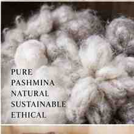
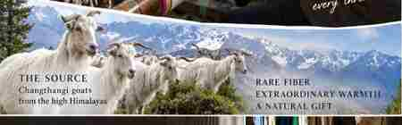

Sozni
The art of fine Kashmiri hand embroidery, built stitch by stitch with a needle and thread.
KASHMIR PASHMINA EDUCATION
Discover the fibre, the craft, the people and the story behind Kashmir Pashmina.
Begin the journey →
WHY THIS EDUCATION EXISTS
Pashmina is often described simply as a soft and luxurious shawl. But behind that shawl is a much longer story.
A Himalayan animal. A precious natural fibre. Generations of knowledge. Spinners. Weavers. Embroiderers. Artisans.
This journey takes you from the origin of the fibre to the finished textile — while keeping one important distinction clear: fibre identity, production method and traditional craft are related, but they are not the same thing.

THE JOURNEY OF PASHMINA
Explore twelve lessons that follow the material, the techniques and the people behind the textile.
FROM THE WORKSHOP ARCHIVE
A small selection of real photographs from the photographic material you provided, used to ground the education journey in the people and materials behind the craft.


NEW TO PASHMINA?
Three lessons give you a foundation before you go deeper into craft, documentation and heritage.
MORE THAN A FIBRE
Pashmina became a canvas for some of Kashmir’s finest textile traditions.
The art of fine Kashmiri hand embroidery, built stitch by stitch with a needle and thread.
A patterned weaving tradition in which designs are built into the fabric during weaving using small wooden tools.
A celebrated Kashmiri textile tradition associated with elaborate patterned weaving, including Kani traditions.
THE HANDS BEHIND THE STORY
The fibre is natural. The knowledge is carried through people, practice and generations.
Transforming prepared fibre into yarn with patience and skill.
Creating the textile on a loom, controlling structure, tension and rhythm.
Creating delicate embroidery through precise needlework.
Building intricate woven patterns with careful planning and colour.
Behind every textile is a human story.
KNOW WHAT YOU ARE BUYING
Ask about the fibre, the spinning, the weaving and the evidence supporting the description.
What is the fibre composition?
Is the yarn hand-spun or machine-spun?
Is the textile handwoven or machine-made?
What evidence, testing or records support the description?
THE PASHMINA DICTIONARY
A living vocabulary shaped by fibre, place, people, craft and tradition.
PROTECTED CRAFTS OF KASHMIR
Geographical Indication recognition connects products with geographical origin, defined characteristics and traditional knowledge.
A registered geographical indication associated with Kashmir Pashmina.
A registered geographical indication associated with the traditional craft.
A registered geographical indication associated with the Kani shawl tradition.
GI numbers shown here should be understood in the context of the official Indian GI registry and its specifications.
SEE THE WHOLE JOURNEY
The material changes form many times before it becomes a finished piece.
PEOPLE, COMMUNITIES & TRADITION
Skills survive when people can learn them, practise them and earn a dignified living from them.
A LIVING HERITAGE
Pashmina is more than a product. It is a living heritage — a story of nature, people, skills and traditions that continues to evolve.